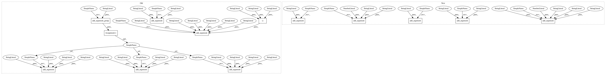

29db4abdbeb839340ac5b0caf934ebda93892934,cnvlib/commands.py,,,#,389
Before Change
P_reference.add_argument("references", nargs="*",
help=Normal-sample target or antitarget .cnn files, or the
directory that contains them.)
P_reference.add_argument("-f", "--fasta",
help="Reference genome, FASTA format (e.g. UCSC hg19.fa)")
P_reference.add_argument("-o", "--output", help="Output file name.")
P_reference.add_argument("-y", "--male-reference", action="store_true",
help=Create a male reference: shift female samples" chrX
log-coverage by -1, so the reference chrX average is -1.
Otherwise, shift male samples" chrX by +1, so the reference chrX
average is 0.)
P_reference.add_argument("-x", "--sample-sex", "-g", "--gender",
dest="sample_sex",
choices=("m", "y", "male", "Male", "f", "x", "female", "Female"),
help=Specify the chromosomal sex of all given samples as male or
female. (Default: guess each sample from coverage of X and Y
chromosomes).)
P_reference_flat = P_reference.add_argument_group(
"To construct a generic, \"flat\" copy number reference with neutral "
"expected coverage")
P_reference_flat.add_argument("-t", "--targets",
help="Target intervals (.bed or .list)")
P_reference_flat.add_argument("-a", "--antitargets",
help="Antitarget intervals (.bed or .list)")
P_reference_bias = P_reference.add_argument_group(
"To disable specific automatic bias corrections")
P_reference_bias.add_argument("--no-gc", dest="do_gc", action="store_false",
help="Skip GC correction.")
P_reference_bias.add_argument("--no-edge", dest="do_edge", action="store_false",
help="Skip edge-effect correction.")
P_reference_bias.add_argument("--no-rmask", dest="do_rmask", action="store_false",
help="Skip RepeatMasker correction.")
P_reference.set_defaults(func=_cmd_reference)
// fix -------------------------------------------------------------------------
After Change
P_coverage = AP_subparsers.add_parser("coverage", help=_cmd_coverage.__doc__)
P_coverage.add_argument("bam_file", help="Mapped sequence reads (.bam)")
P_coverage.add_argument("interval", help="Intervals (.bed or .list)")
P_coverage.add_argument("-c", "--count", action="store_true",
help=Get read depths by counting read midpoints within each bin.
(An alternative algorithm).)
P_coverage.add_argument("-q", "--min-mapq", type=int, default=0,
help=Minimum mapping quality score (phred scale 0-60) to count a read
for coverage depth. [Default: %(default)s])
P_coverage.add_argument("-o", "--output", help=Output file name.)
P_coverage.add_argument("-p", "--processes",
nargs="?", type=int, const=0, default=1,
help=Number of subprocesses to calculate coverage in parallel.
Without an argument, use the maximum number of available CPUs.
[Default: use 1 process])
P_coverage.set_defaults(func=_cmd_coverage)
// reference -------------------------------------------------------------------
In pattern: SUPERPATTERN
Frequency: 3
Non-data size: 13
Instances
Project Name: etal/cnvkit
Commit Name: 29db4abdbeb839340ac5b0caf934ebda93892934
Time: 2017-02-24
Author: eric.talevich@gmail.com
File Name: cnvlib/commands.py
Class Name:
Method Name:
Project Name: etal/cnvkit
Commit Name: 47f6b481964339b4a7ae8e15f3a3610b9722aeb6
Time: 2018-01-10
Author: eric.talevich@gmail.com
File Name: cnvlib/commands.py
Class Name:
Method Name:
Project Name: etal/cnvkit
Commit Name: 29db4abdbeb839340ac5b0caf934ebda93892934
Time: 2017-02-24
Author: eric.talevich@gmail.com
File Name: cnvlib/commands.py
Class Name:
Method Name:
Project Name: etal/cnvkit
Commit Name: 29db4abdbeb839340ac5b0caf934ebda93892934
Time: 2017-02-24
Author: eric.talevich@gmail.com
File Name: cnvlib/commands.py
Class Name:
Method Name: